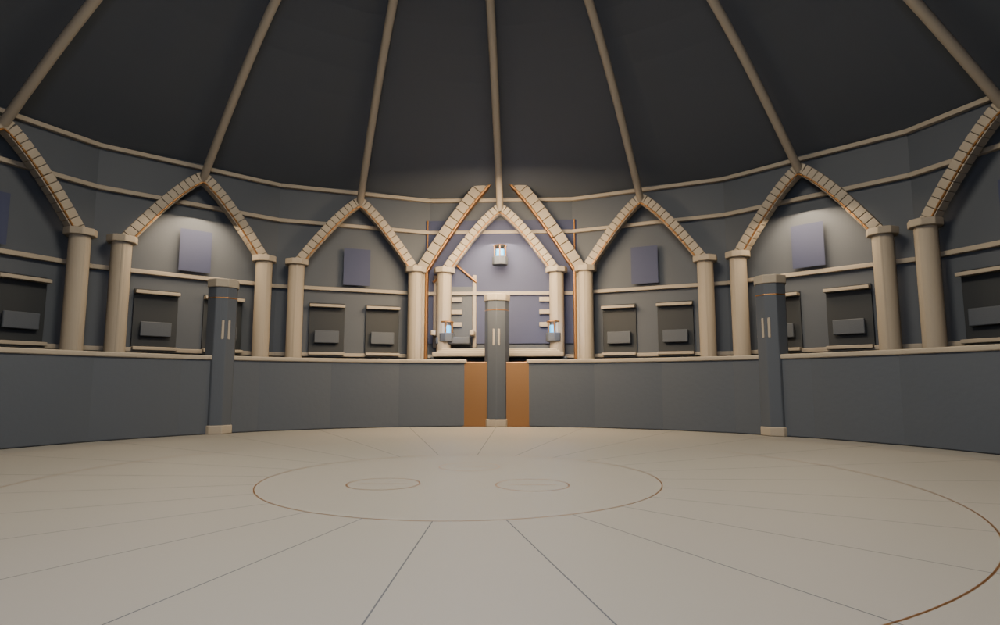
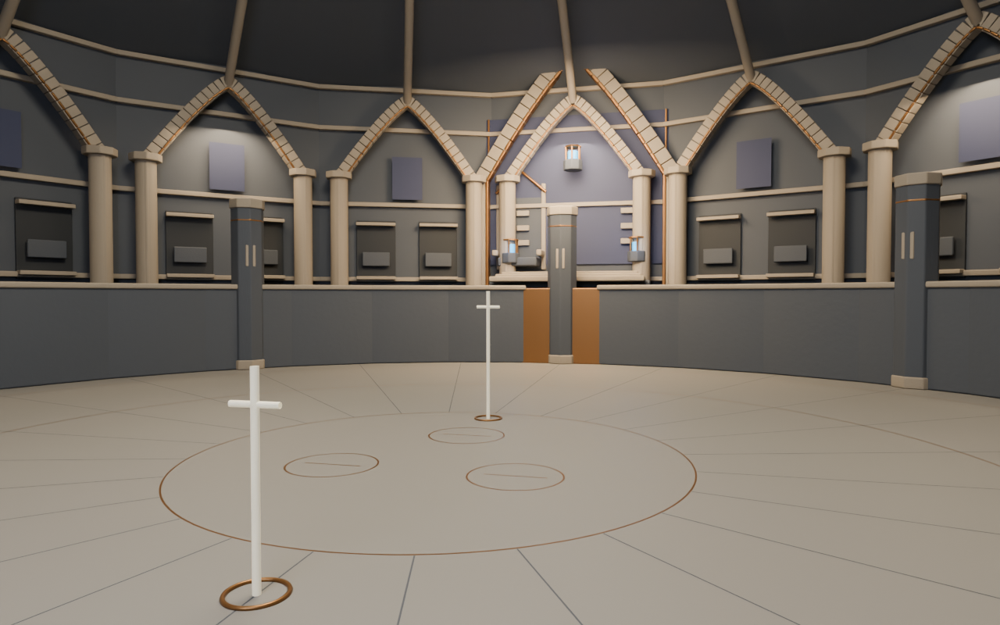
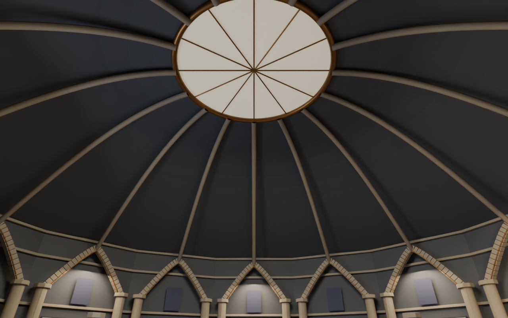
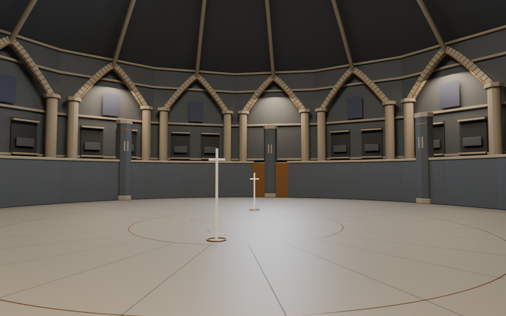
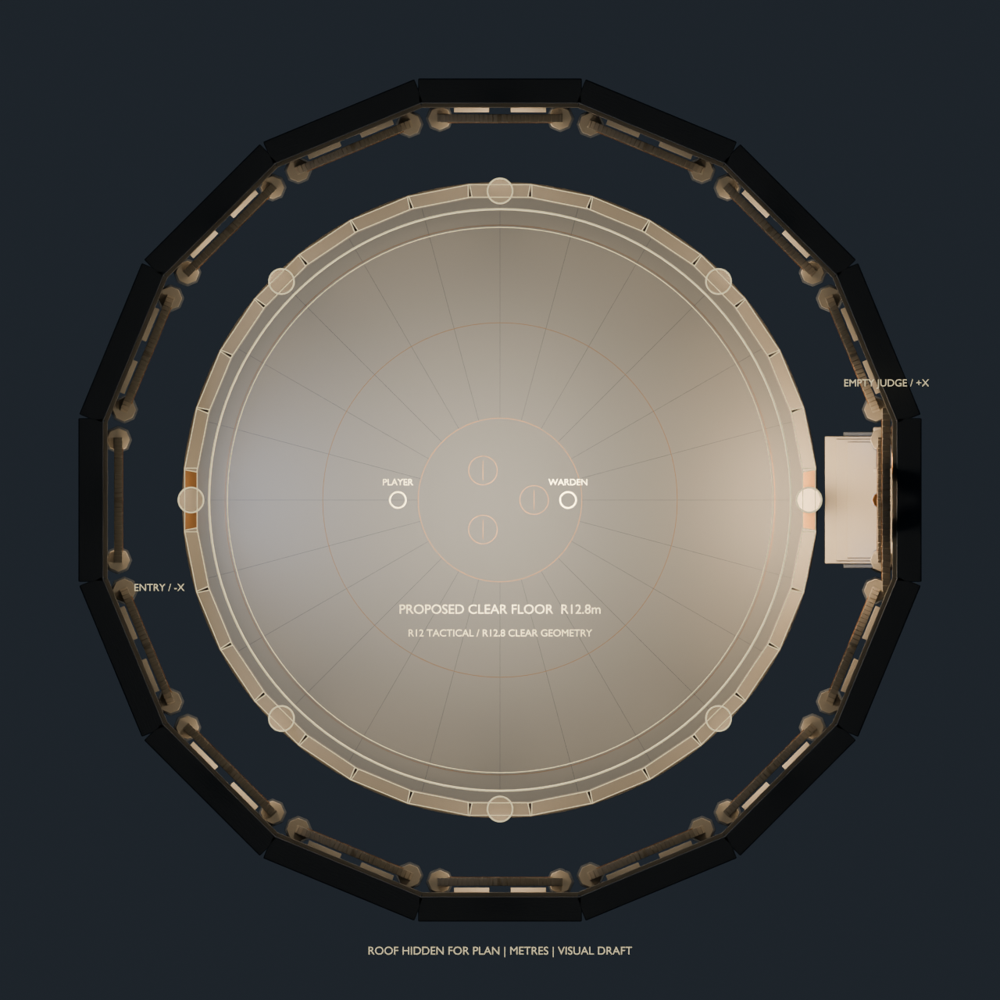

ORIGINAL BLENDER ARCHITECTURE · VISUAL DRAFT · 2026-11-09
Court of the Last Witness
A sunken funerary tribunal: a quiet circular fight floor, burial arcades, a sealed ivory oculus and an empty judgment seat watched by three blue reliquaries.
Standalone arena concept. The playable Unreal map, collision, characters and combat are unchanged. These are actual Blender renders—not gameplay captures. No runtime FPS, camera or combat-clearance acceptance is claimed.

Entrance view toward +X. The throne is offset +2.2m in Y beside the preserved central pillar. Some architectural occlusion remains; the original collision was not moved for the image.
75° horizontal field of view. Simple 1.8m / 2.43m height rulers are scale references, not character assets or validated runtime bounds.
Side architectural view, aimed upward to inspect the closed vault and 8.1m sealed oculus. This camera is not a gameplay camera.
Near-boundary static view. It exposes the perimeter and floor; it does not test the game's spring-arm retraction or moving-character occlusion.
Roof hidden for the plan only. R12m tactical guide; R12.8m proposed clear floor; R14m slab. Original wall and pillar outlines are diagnostic overlays, not new combat boundaries.Construction and evidence
New scenic supports sit beyond the existing boundary. The full plinth envelope is recorded, not only shaft radius. Floor inlays are flat meshes with a 1mm render offset. The three blue chambers are passive empty reliquaries; no new skull character or arena hazard was built.
Preserved comparisons
Initial washed-out/occluded draft · Second draft before throne offset and memorial-pier cladding. The initial render job was deliberately stopped after two complete images; its termination receipt is retained.
Materials and procedural architecture are original. No downloaded environment assets or generated images were used. Repeated modules are not yet a consolidated Unreal instancing/LOD package.